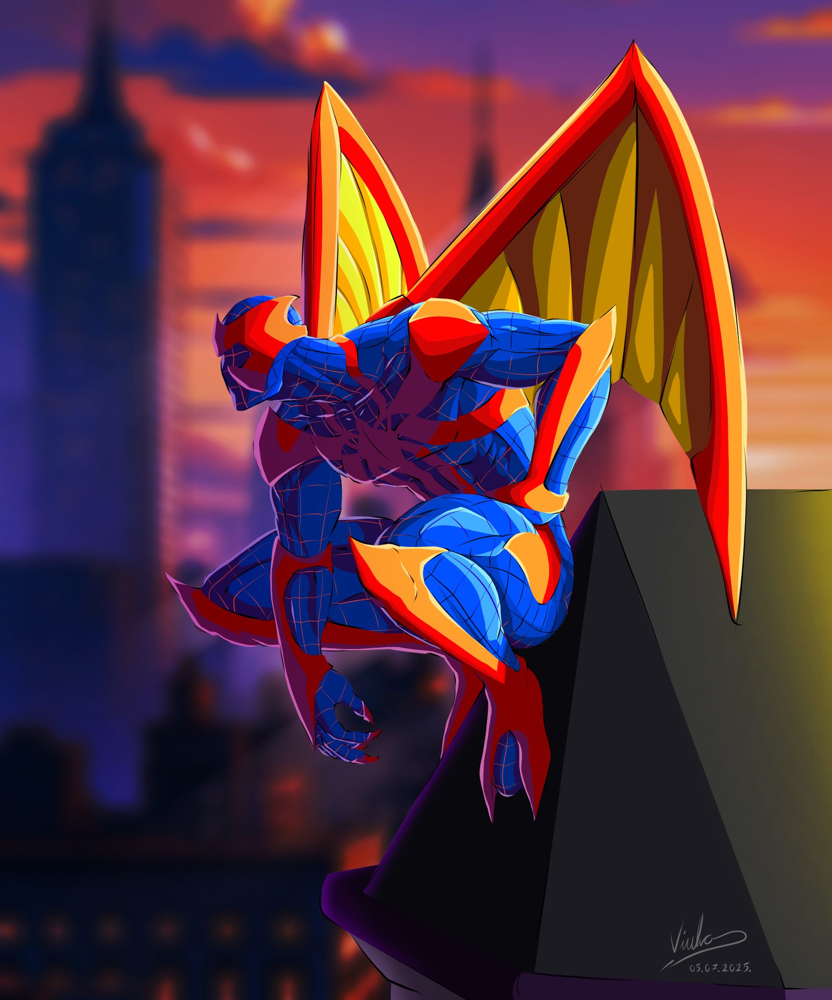
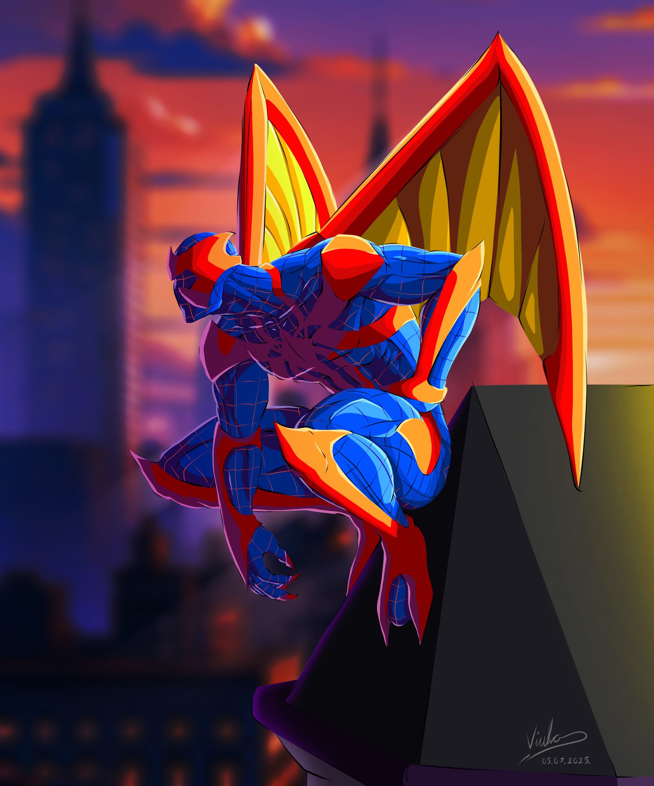
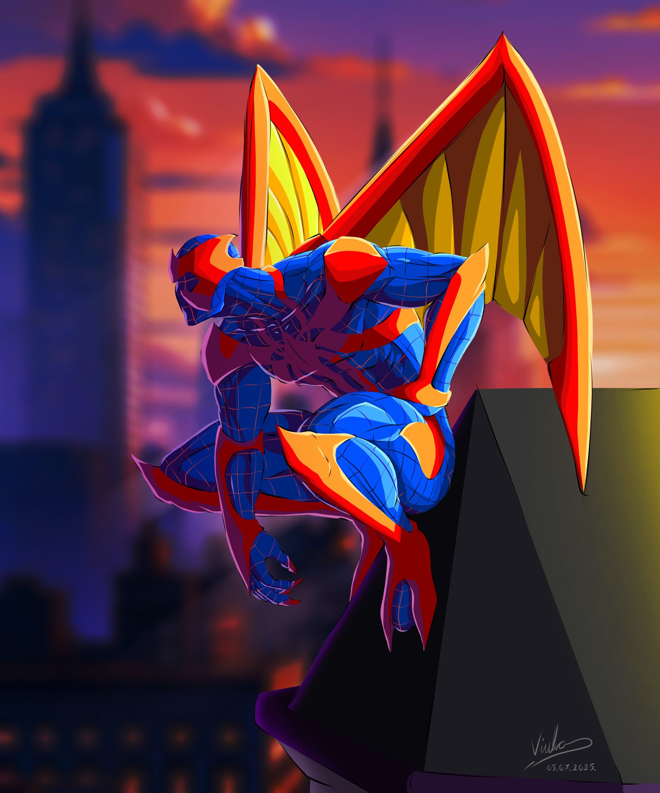

Par osobnih radova
 


Ovo je uvod u projektni zadatak iz kolegija Multimedijske Komunikacije 1.
Unutar kolegija se trenutno obrađuju dvije cjeline, a to su:
Stranica privremeno nema određene teme te iz tog razloga zahtijevamo malo strpljenja.
Radi održavanja nekakvog interesa, ispod se nalaze nekakvi dodatni elementi i par informacija o meni.
Kodiranjem sam se počeo baviti još u srednjoj školi te sam relativno dobro upoznat s nekim jezicima, kao što su HTML, CSS, Python, Django pa čak i JS.
Osim programiranja, dosta vremena provodim u crtanju.
Osim papira, koristim i digitalne programe za to, kao što su SketchBook, Krita, PaintTool SAI i drugi.
Ostali programi s kojima sam upoznat
Par osobnih radova

To je to za sada.
Hvala na pažnji i vidimo se uskoro!
25.10.2025.